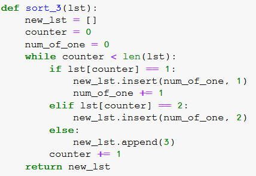
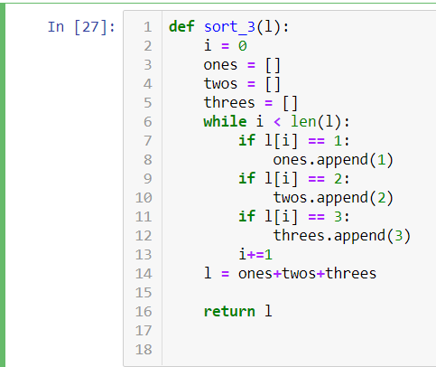

ברשימה לצורך תרגיל זה יכולים להיות רק שלושה סוגי איברים: 1, 2 ו־3.
כתבו פונקציה בשם sort_3 שמקבלת רשימה לא מסודרת, ומסדרת את האיברים לפי ערכם בריצה אחת בלבד על הרשימה.
טכנית אני מקבל את הפתרון כי את על O(n), אבל אפשר גם בעזרת while בודד
orpazf
טכנית עברתי פעם אחת על הרשימה… ועוד פעם אחת על רשימה חדשה אבל אני הולכת לחפש דרך עם לולאה אחת
zurikarat
לולאה אחת/ לולאה מקוננת?
Yam
לולאה אחת. לולאה מקוננת זה אסון () מבחינת יעילות
orronai
מה היעילות של פעולת extend או שרשור רשימות?
Yam
עבור extend – מספר הפעולות הן כמספר האיברים שאתה מוסיף.
עבור שרשור רשימות – מספר הפעולות כגודל כמות האיברים המשורשרים (צד ימין + צד שמאל של הפלוס)
orronai
אז נשמע ש-extend יעילה יותר משרשור רשימות:
def sort_3(l):
one = 0
two = 0
three = 0
i = 0
while i < len(l):
if l[i] == 1:
one += 1
elif l[i] == 2:
two += 1
elif l[i] == 3:
three += 1
i += 1
l=[]
l.extend([1] * one)
l.extend([2] * two)
l.extend([3] * three)
return l
orpazf

מצד אחד לולאה אחת, מצד שני זמן הריצה שלי עכשיו הוא ריבועי. אני מפספסת משהו שאמור להשאיר את זה לינארי גם בלולאה אחת או שזו הכוונה?
Yam
זה אמור להשאר ליניארי גם בלולאה אחת
לייק 1
Yam
זה פתרון לא רע! (אקוויולנטי לזה של אורפז). אפשר אפילו טוב יותר
idanshalem25
האם זו הכוונה? או שלא הבנתי את המטלה

Yam
זה אחלה, זה עובד וזה פותר את התרגיל
אבל זה יוצר רשימה חדשה ומעתיק אליה את כל האיברים, כך שבפועל הסתכלת על כל איבר פעמיים (ו"בזבזת" משאבים ביצירת עוד רשימה)
יש דרך יותר מהירה
idanshalem25
האם פעולות כמו pop או insert מסתכלות על כל האיברים מתחילת הרשימה ככה שהפונקציה רצה מחדש על הרשימה?
Yam
כן, pop או insert מוסיפות/מסירות איבר, ומזיזות את כל האיברים לפניהם/אחריהם ברשימה אחד קדימה/אחורה
לייק 1
orronai
def sort_3(l):
one = 0
i = 0
while i < len(l):
if l[i] == 1:
l.insert(0, l.pop(i))
i += 1
one += 1
elif l[i] == 2:
l.insert(one, l.pop(i))
i += 1
elif l[i] == 3:
i += 1
return l
Yam
יפה, אבל הקודם שלך היה יעיל יותר. ראה תשובתי למעלה


 אבל אני הולכת לחפש דרך עם לולאה אחת
אבל אני הולכת לחפש דרך עם לולאה אחת ) מבחינת יעילות
) מבחינת יעילות{kind=link}